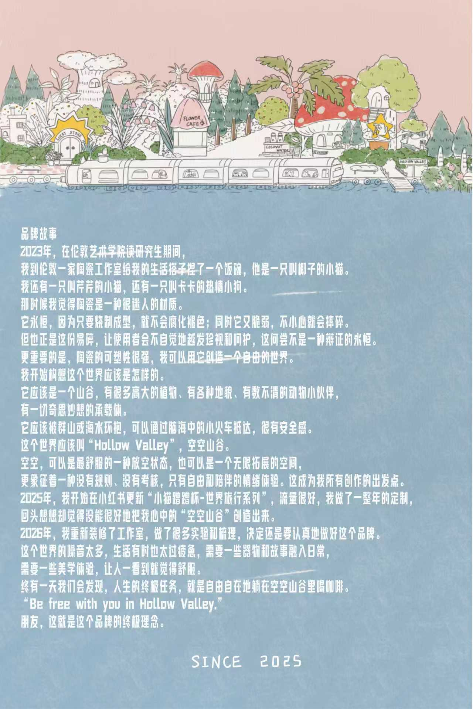
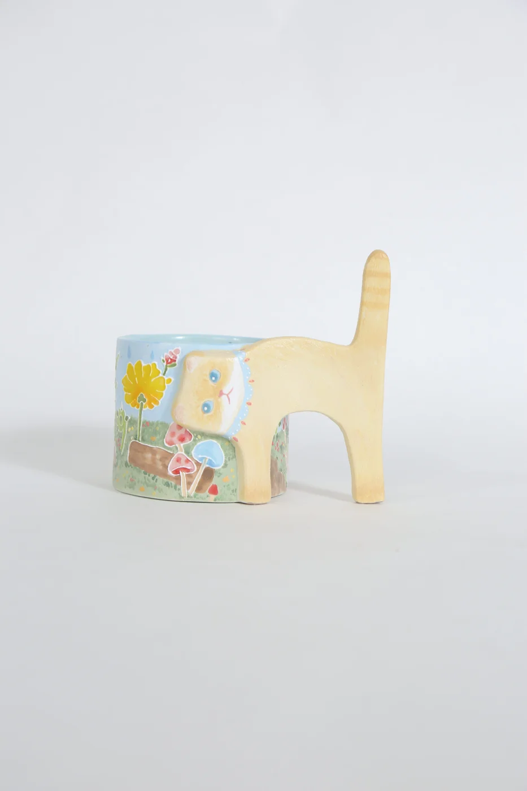
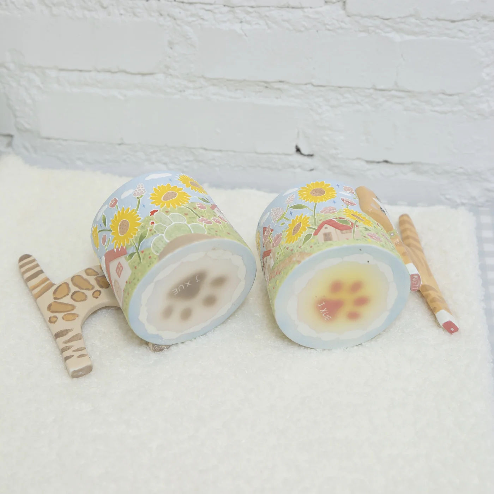

The sunflower wanderer
01Cat-shaped cup · A garden carried along
CERAMICS & LITTLE COMPANIONS · SINCE 2025
空空山谷
A little world of freedom and companionship.

Come by little train. Stay for a daydream.
01 / SELECTED WORKS
Cats with places to go.
Tableware with tales to tell.
Cat-shaped cup · A garden carried along
Cat-shaped cup · A different travelling companion
Illustrated plate · A tiny daydream
Floral tableware · Time for a little pause
Illustrated mugs · Companions for the everyday
Ceramic jewellery · A little valley to take with you
02 / A CAT'S TRAVEL DIARY
Turn a little. Wander a little.
There is another story on the other side.

A little ceramic daydreamCHAPTER 01 · THE GARDEN
The little cat leaves the valley with no great plan. A field of sunflowers is reason enough to stop.
Today's plan: follow the sun.
A photo flipbook, made from our real ceramic pieces.
Imaginary adventures. Tangible little companions.
03 / THE STORY OF HOLLOW VALLEY
It began with a bowl for a cat.
And grew into a world of our own.
Since 2025

2023 · THE FIRST LITTLE BOWL
In 2023, while studying for my master’s degree at art school in London, I visited a local pottery studio to make a food bowl for my little companion, a cat named Yezi. I also shared my life with another cat and an exuberant little dog named Kaka.
I found ceramics fascinating. Once fired, clay seemed almost timeless: it would not decay or lose its colour. Yet it was also fragile, easily broken by a careless moment. That very fragility invites us to treasure it and care for it. Perhaps being cherished is its own kind of permanence.
Most of all, I loved how much clay could become. With it, I could create a world that was free.
AN IMAGINARY PLACE TO BELONG
I began to imagine that world: a valley filled with towering plants, varied landscapes and countless animal companions. A place with room for every curious idea. Mountains and sea would surround it, and a little train would bring you straight in. Somewhere you could feel completely safe.
I called it Hollow Valley — 空空山谷.
“Hollow” could mean the lovely feeling of letting your mind go quiet, or a space that keeps opening out. Above all, it stood for a kind of freedom and companionship without rules or judgement. That feeling became the starting point for everything I made.
2025 · STORIES BEGIN TO TRAVEL
In 2025, I began sharing my “Bouncy Cat Cups — World Travels” series on Xiaohongshu. The response was wonderful, and I spent a whole year making custom pieces. Looking back, though, I felt I had not yet brought the Hollow Valley in my imagination fully to life.
2026 · MAKING SPACE FOR THE VALLEY
In 2026, I renovated my studio, experimented, organised my ideas, and decided to give this brand the care and attention it deserved.
The world can be noisy, and everyday life can feel rushed and anxious. I wanted to bring objects and stories into ordinary days: small encounters with beauty that make us feel a little more at ease.
Perhaps one day we will discover that life’s final task is simply to relax in Hollow Valley, free to be ourselves, with a cup of coffee.
Be free with you
in Hollow Valley.
My friend, that is the idea at the heart of this brand.
THE STORY CONTINUES
For new stories, ceramic pieces and exhibition enquiries.
Say hello on Instagram@j.xuestudio